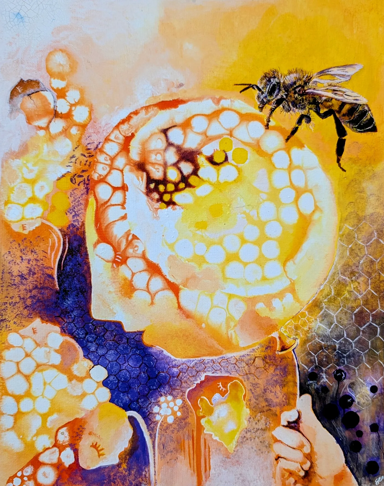
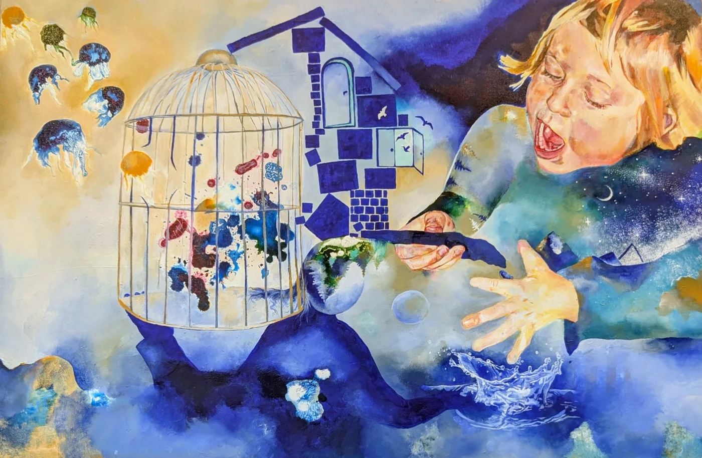
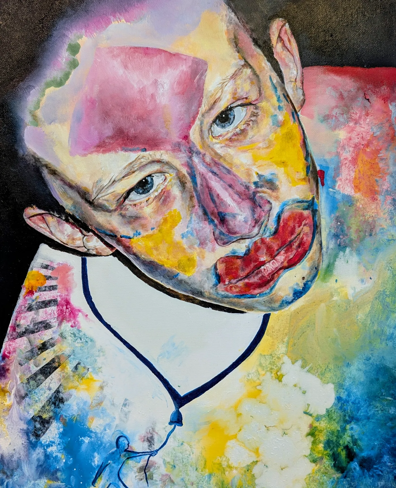
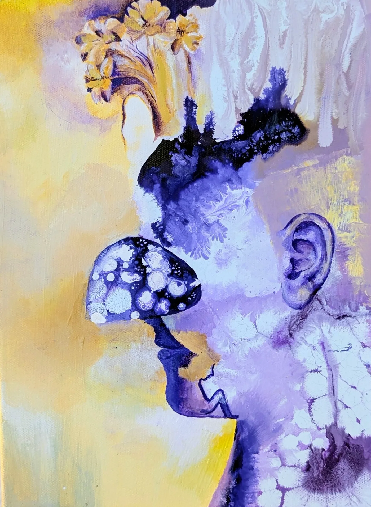
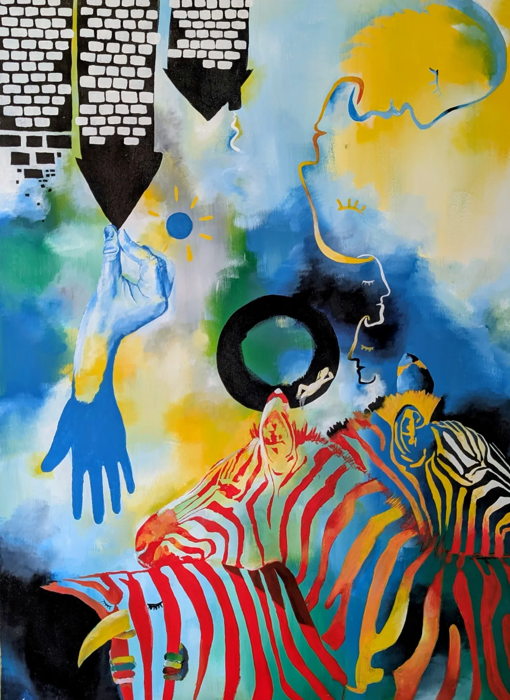
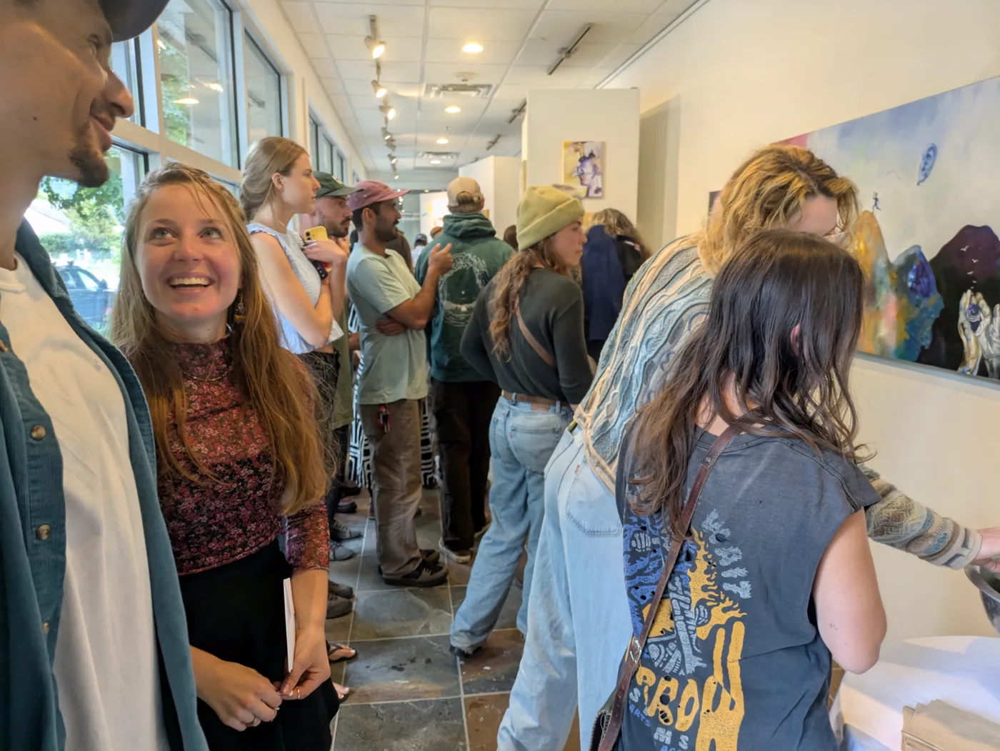
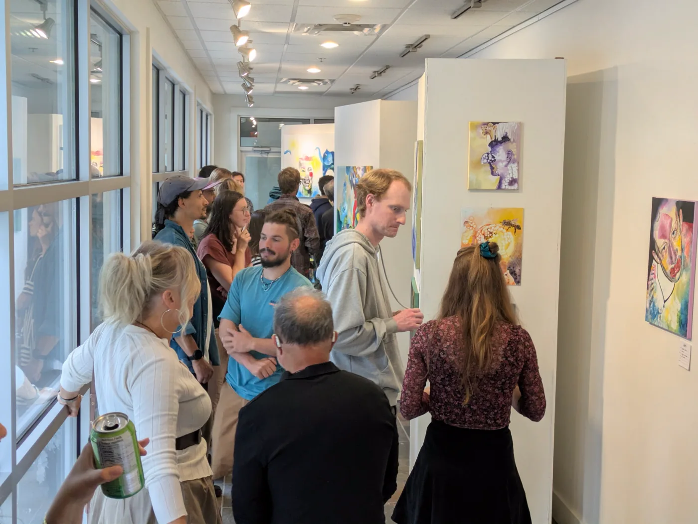
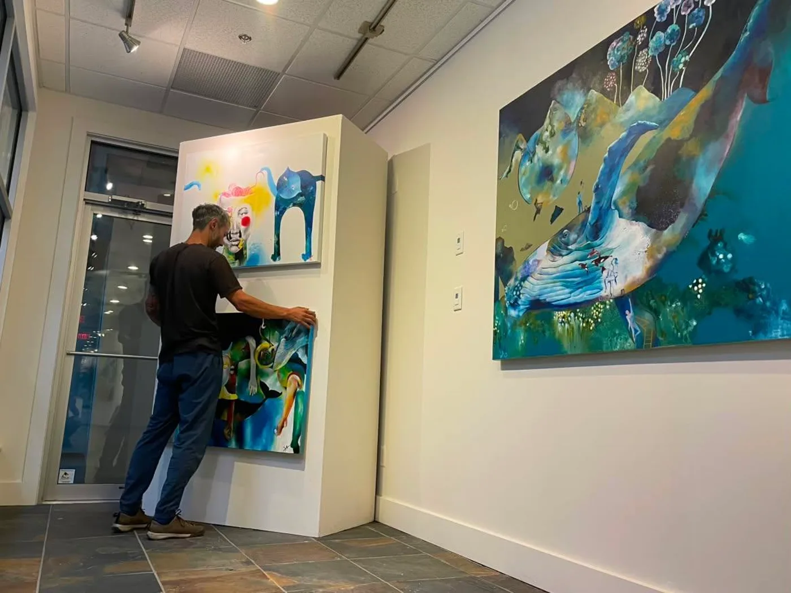
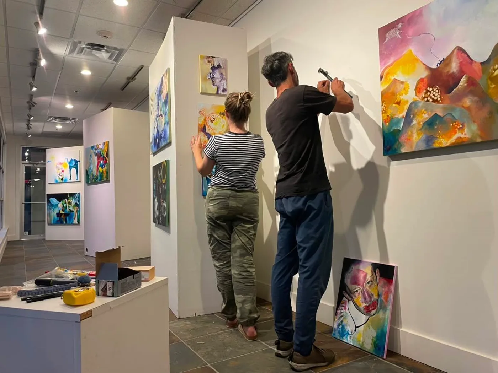
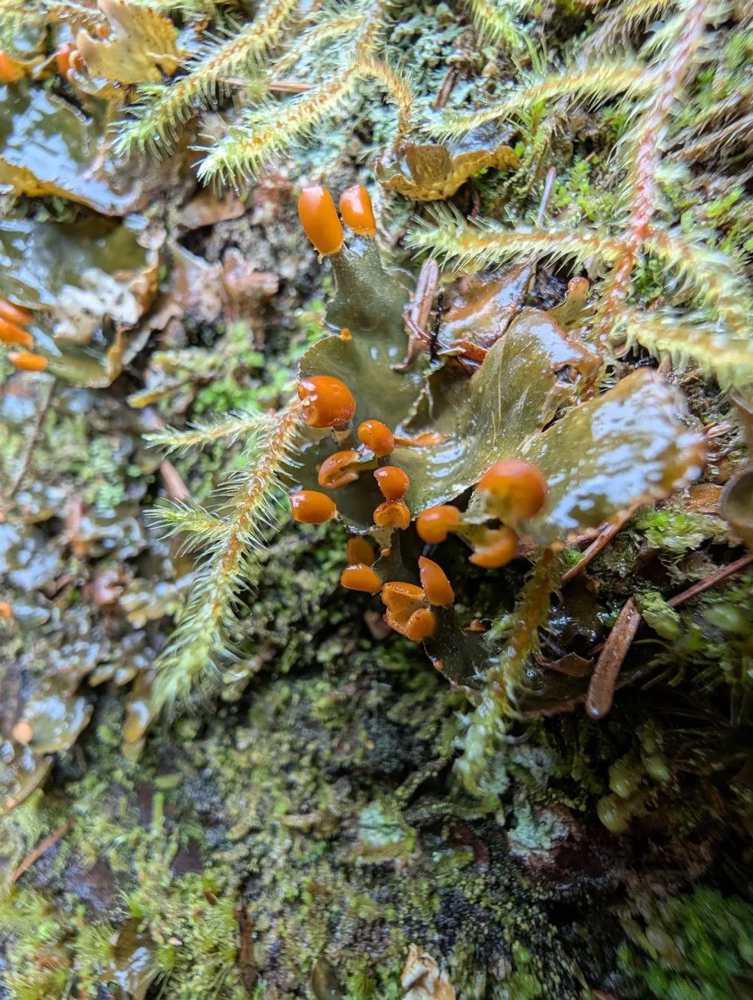

I feel the freest in the in-between moments.
We hold a lot of stories about ourselves and about the world, and the older I get, the more I notice they often don't quite line up with reality. How often do we live inside our heads, convinced the story is the whole picture? Reality is so much more complex and beautiful than what our minds construct about our identities, about others, about what any of this is.
I often go for runs to be seen by something real, something organic like myself, and to momentarily escape the constructed mental web we live and operate under. We are a fascinating species. But with our complexity comes our primitiveness, and the truth tends to exist in silence. In the aftermath. Life doesn't happen in the glamorous moments. It happens in the in-between, when we wait for the bus, when we're rushing to the next thing, when nobody is watching and nothing is asked of us.
With this exhibit I want to point at the small, beautiful things worth living for. I'd like to remind my dear friends to look closely at moss, at the trees and listen to the birds in our beautiful forests. Life is already here, happening all around us. Step into the silence long enough for the truth to come up. It's worth sitting with.
Twenty or more new works in layered acrylic and acrylic ink, figurative, surreal, unhurried. The first pieces from the series are shown below, with more to follow as the show is documented in full.





Free and open to the public, with an opening event and artist talk.





Look closely at moss, at the trees, listen to the birds in the forest. Life is already here, happening all around us.